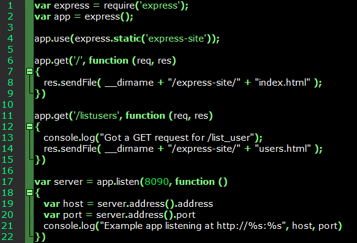
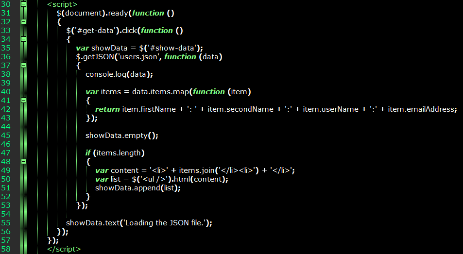

Node.js Express
While looking for a lightweight alternative to MVC, for testing various JavaScript libraries. Using
Node.js, JSON and
jQuery, I've managed to develop something approximating a lightweight MVC application.
The main purpose of Node.js is to enable the creation of Web servers and associated network tools using JavaScript, and there are additional modules for performing server-side operations. Node.js enables communication between the client-side JavaScript and the server.
A Node.js application has the following:
- Module imports
- Server creation
- Response
Creating a Simple Server
The server-side code for this is simple:
var http = require("http");
http.createServer(function (request, response)
{
response.writeHead(200, {'Content-Type': 'text/plain'});
response.end('Hello World\n');
}).listen(8090);
console.log('Server running at http://127.0.0.1:8090/');
Note the server is merely a process listening on port 8090, and doesn't host Web pages at this stage. The response.writeHead() and response.end() methods create the HTTP response header and body. When this code executes, the string in console.log() will appear in the command line. I saved this file as 'nodeserver.js'.
To start the server using the Node.js interpreter, simply navigate the command line to the directory where the .js file's stored, and enter the following:
node nodeserver.js
Now navigate the browser to http://localhost:8090 to see the response body (just 'Hello World') displayed in the browser.
File Operations
Perhaps the main reason we want server-side code, rather than something entirely client-based is data persistence - storing and retrieving data on a server is a core feature of a Web application.
Here I have two files: file-op.js server-side script, and the serverdata.txt data file. The latter simply contains two lines of text.
This time we import both the http and filesystem (fs) modules:
var http = require("http");
var fs = require("fs");
And specify the file to read:
var data = fs.readFileSync('serverdata.txt');
And this time, the HTTP response is defined as the contents of serverdata.txt:
http.createServer(function (request, response)
{
response.writeHead(200, {'Content-Type': 'text/plain'});
response.end(data.toString());,/br>
}).listen(8090);
Streaming Data and Writing to File
The filesystem module enables the JavaScript to perform I/O with files using createReadStream() and createWriteStream().
As before, we import http and the filesystem modules, but declare the data as null. Another variable is needed to declare the read stream.
Although this isn't much at this point, it demonsrates that we can use persistent storage with a bit of JavaScript.
Node.js Express
This can be used to achieve the same thing as ASP.NET MVC, as it handles routing, REST requests and other server-side operations.
First we need to use npm to install Express.js.
npm install express --save
We'll use the following simple express server to understand routing:

Here we have two functions/methods for responding to requests in different ways.
To initiate an action, we only need to send its name as part of the URI in the browser. For example, 'http://localhost:8090/listusers' will cause express to return the response for that app.get() method.
As you've probably noticed, this looks much like the ASP.NET MVC controllers. The res.sendFile() line is equivalent to the return(View) in an MVC controller, redirecting the browser to a view after an action was completed.
JSON
Of course, most Web applications function as an interface to some data source. Here I'll try and use a JSON-based source to store and retrieve the data, with data being sent between the HTML and the JavaScript controllers. The Express.js site lists the database integrations it supports.
For the following the body-parser is required through npm:
npm install body-parser --save
In the HTML file we have a simple form with two fields. To the JavaScript file we add another method for handling the data submitted from the HTML.
Submitting data in the running Web site at this point will result in the data being JSON-formatted:
{"firstName":"michael","secondName":"mysecondname","user_name":"michael","user_email":"michael@mail.com"}
Now we need a .json file for the application to append. Mine is called 'users.json'.
This can also be extended to MongoDB, which is also JSON-based, if a data access layer needs to be added.
Listing Users and Displaying JSON Data
To render the JSON data in an HTML page, you'll need jQuery and some script in the HTML source that fetches the data returned by the Node.js controller. It's important the JSON file is formatted correctly this time, which probably means I'd have to go back and modify the code for adding entries.
In the HTML I have two elements, 'get-data' and 'show-data'. The first is a link that triggers the JSON reader JavaScript.
The reader JavaScript uses jQuery. This will read the JSON file, and return the output to the 'show-data' element.
